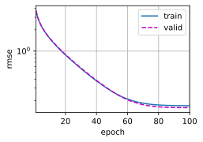
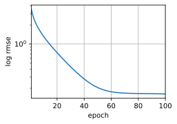

本文FROM《动手学深度学习》第四章第十节，链接详见参考资料1
工作环境
| 软件名称 | 说明 | 备注 |
|---|---|---|
| anaconda | Python环境和开源模块管理工具 | 默认 |
| Python | 开发语言 | 3.8 |
| torch、torchvision | 深度学习框架 | 默认 |
| d2l | 动手学深度学习官方模块 | 默认 |
| VS Code | 开发IDE | 默认 |
创建项目
创建项目文件夹kaggle-house-prices（自定义命名）以及code子文件夹，code/下创建Jupyter notebook，所有代码写在这里面。
生成的项目结构如下：
kaggle-house-prices/ |
下载数据集
数据集来自于Kaggle上的一个竞赛。网址：https://www.kaggle.com/c/house-prices-advanced-regression-techniques/data
你可以直接从上面下载数据集；（包含训练集、测试集、数据描述和提交样例）
或者你可以使用书中的方式下载代码，这里我把完整的代码贴一下。
import hashlib |
正在从http://d2l-data.s3-accelerate.amazonaws.com/kaggle_house_pred_train.csv下载..\data\kaggle_house_pred_train.csv...
正在从http://d2l-data.s3-accelerate.amazonaws.com/kaggle_house_pred_test.csv下载..\data\kaggle_house_pred_test.csv...
使用书中的代码下载的数据集存放在../data/中。结构目录如下：
kaggle-house-prices/ |
下面进行数据读取和预处理。
读取数据集
# 如果pandas没有被安装，请取消下一句的注释。 |
train_data = pd.read_csv("../data/kaggle_house_pred_train.csv") |
# 打印他们的行列数，这里test_data的列比train_data少1，少的是标签一列 |
(1460, 81)
(1460, 81)
# print train_data 两个参数分别指出打印的行（样本）和列（特征） |
Id MSSubClass MSZoning LotFrontage SaleType SaleCondition SalePrice
0 1 60 RL 65.0 WD Normal 208500
1 2 20 RL 80.0 WD Normal 181500
2 3 60 RL 68.0 WD Normal 223500
3 4 70 RL 60.0 WD Abnorml 140000
将train_data和test_data去掉第一个特征（第一个特征是ID，对训练无意义）的所有特征都放到all_features中：
all_features = pd.concat((train_data.iloc[:, 1:-1], test_data.iloc[:, 1:])) |
数据预处理
在开始建模之前，我们需要对数据进行预处理。
对于数字特征，首先，将所有缺失的值替换为相应特征的平均值；
然后，为了将所有特征放在一个共同的尺度上，我们通过将特征重新缩放到零均值和单位方差来标准化数据：
此时，特征即具有零均值和单位方差，即 $E[\frac{x-\mu}{\sigma}] = \frac{\mu - \mu}{\sigma} = 0$和$E[(x-\mu)^2] = (\sigma^2 + \mu^2) - 2\mu^2+\mu^2 = \sigma^2$。
标准化数据有两个原因：
- 方便优化；
- 我们不知道哪些特征是相关的，所以我们不想让惩罚分配给一个特征的系数比分配给其他任何特征的系数更大；
- 取消由于量纲不同、自身变异或者数值相差较大所引起的误差。
更多关于标准化的知识请见参考资料2
这里可以看到，书中提到的是先处理缺失值，再标准化；而实际代码是先标准化，再处理缺失值。
# 若无法获得测试数据，则可根据训练数据计算均值和标准差 |
对于离散值，我们使用one-hot编码，就是特征的离散值转换为向量。例如，特征“type”的值包括cat，dog，rat，那么经过one-hot编码后会生成三个特征“type_cat”，“type_dog”，“type_rat”。如果原来“type”=cat，则“type_cat”=1，“type_dog”=0，“type_rat”=0。
# “Dummy_na=True”将“na”（缺失值）视为有效的特征值，并为其创建指示符特征 |
(2920, 332)
可以看到，此转换会将特征的总数量从79个增加到331个。 最后，通过values属性，我们可以 从pandas格式中提取NumPy格式，并将其转换为张量表示用于训练。
n_train = train_data.shape[0] # 取得train_data的行数 |
训练
首先，我们训练一个带有损失平方的线性模型。如果一切顺利，线性模型将作为基线（baseline）模型， 让我们直观地知道最好的模型有超出简单的模型多少。
损失函数：MSE Loss
基线模型：（个人理解）最先想到的、最简单的、结果比较差、一般在此基础上进行优化的模型。
loss = nn.MSELoss() |
对于房价，就像股票价格一样，我们关心的是相对数量，而不是绝对数量。因此，[我们更关心相对误差$\frac{y - \hat{y}}{y}$，]而不是绝对误差$y - \hat{y}$。例如，如果我们在俄亥俄州农村地区估计一栋房子的价格时，我们的预测偏差了10万美元，在那里一栋典型的房子的价值是12.5万美元，那么我们可能做得很糟糕。另一方面，如果我们在加州豪宅区的预测出现了这个数字的偏差，这可能是一个惊人的准确预测（在那里，房价均值超过400万美元）。
(解决这个问题的一种方法是用价格预测的对数来衡量差异)。事实上，这也是比赛中官方用来评价提交质量的误差指标。即将 $\delta$ for $|\log y - \log \hat{y}| \leq \delta$转换为$e^{-\delta} \leq \frac{\hat{y}}{y} \leq e^\delta$。这使得预测价格的对数与真实标签价格的对数之间出现以下均方根误差：
def log_rmse(net, features, labels): |
在这里，我一开始对损失函数（loss）和评价指标（metrics）没有理解，所以我对loss和log_rmse纠结了很久。
这里我的理解是，
loss是需要丢到网络里的，是网络优化的目标函数；因为需要通过梯度下降来反向传播，所以必须是可导的；
metrics是评价网络的一种指标，不参与优化；不需要可导。
更多关于损失函数和评价指标请参见参考资料3，参考资料4
我们的训练函数将借助Adam优化器。
Adam优化器的主要吸引力在于它对初始学习率不那么敏感。
def train(net, train_features, train_labels, test_features, test_labels, |
K-折交叉验证
所谓K-折交叉验证就是把train data分为K份，每次1/K份作为验证集，把另外的1 - 1/K份作为训练集。事实上，get_k_fold_data就是在做这件事。
K-折交叉验证有助于模型选择和超参数调整。
def get_k_fold_data(k, i, X, y): |
k_fold中先求每一折得到的trian-loss, valid-loss，注意train_ls和valid_ls是一个list，存放了每次迭代后loss值，我们取train_ls[-1]，也就是最终的那个loss
最后把所有K-折得到的train-loss的平均和valid-loss的平均
def k_fold(k, X_train, y_train, num_epochs, learning_rate, weight_decay, |
模型选择
下面是一组超参数，后面我们可以对此进行调优（改改数， run run code）
k, num_epochs, lr, weight_decay, batch_size = 5, 100, 5, 0, 64 |
折1，训练log rmse0.168934, 验证log rmse0.158768
折2，训练log rmse0.162051, 验证log rmse0.186553
折3，训练log rmse0.163633, 验证log rmse0.167966
折4，训练log rmse0.167716, 验证log rmse0.154111
折5，训练log rmse0.161381, 验证log rmse0.184188
5-折验证: 平均训练log rmse: 0.164743, 平均验证log rmse: 0.170317

请注意，有时一组超参数的训练误差可能非常低，但 K 折交叉验证的误差要高得多， 这表明模型过拟合了。 在整个训练过程中，你将希望监控训练误差和验证误差这两个数字。 较少的过拟合可能表明现有数据可以支撑一个更强大的模型， 较大的过拟合可能意味着我们可以通过正则化技术来获益。
提交Kaggle预测
当我们用上面的K-折交叉验证确定参数后，我们将超参数固定住，把所有的train data拿来train。
如果测试集上的预测与 K 倍交叉验证过程中的预测相似， 那就是时候把它们上传到Kaggle了。 下面的代码将生成一个名为submission.csv的文件。
def train_and_pred(train_features, test_feature, train_labels, test_data, |
训练log rmse：0.162150

接下来我们将生成的submission.csv文件提交到Kaggle：
- 访问https://www.kaggle.com/c/house-prices-advanced-regression-techniques/data
- 点击“Submit Predictions”
- 选择你要上传的预测文件
submission.csv - 点击页面底部的“Make Submission”按钮，即可查看结果。
小结
- 真实数据通常混合了不同的数据类型，需要进行预处理。
- 常用的预处理方法：将实值数据重新缩放为零均值和单位方法；用均值替换缺失值。
- 将类别特征转化为指标特征，可以使我们把这个特征当作一个独热向量来对待。
- 我们可以使用 K 折交叉验证来选择模型并调整超参数。
- 对数对于相对误差很有用。
更进一步
这里是书中给出的一些思考问题，我没做，但是依然列出来供参考：
- 将试图预测价格改为试图预测价格的对数，会发生什么？
- 用平均值替换缺失值总是好主意吗？提示：你能构造一个不随机丢失值的情况吗？
- 通过 K 折交叉验证调整超参数，从而提高Kaggle的得分。
- 通过改进模型（例如，层、权重衰减和dropout）来提高分数。
- 如果我们没有像本节所做的那样标准化连续的数值特征，会发生什么？
后记
我仔细阅读原文，捋了一边代码。
基础比较差，有些地方认识不太清晰，全凭自己理解，如有错误，请多包涵，或直接邮箱联系我。
我原以为会有训练模型错误率不断降低的成就感。。但实际上全是复制粘贴run code。
好像学到了又好像没学到。🤦